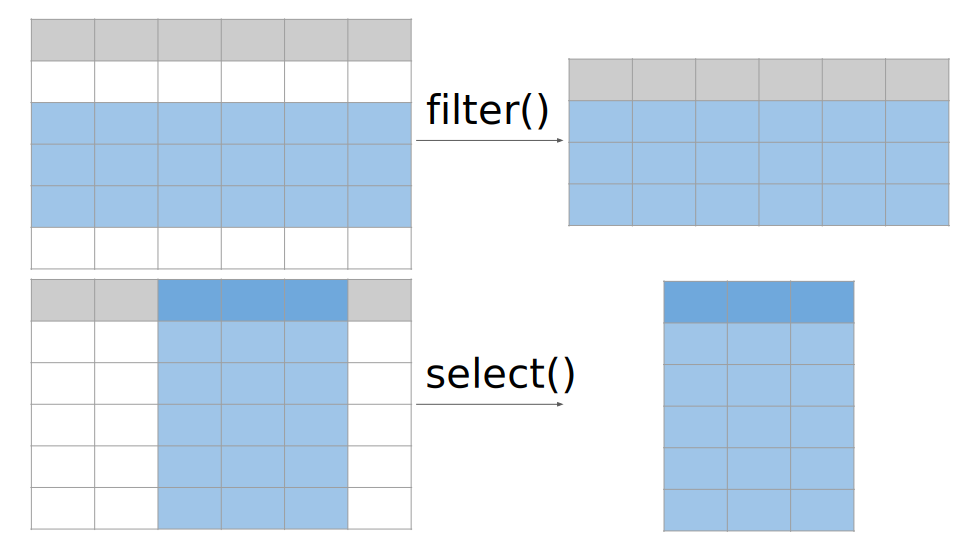
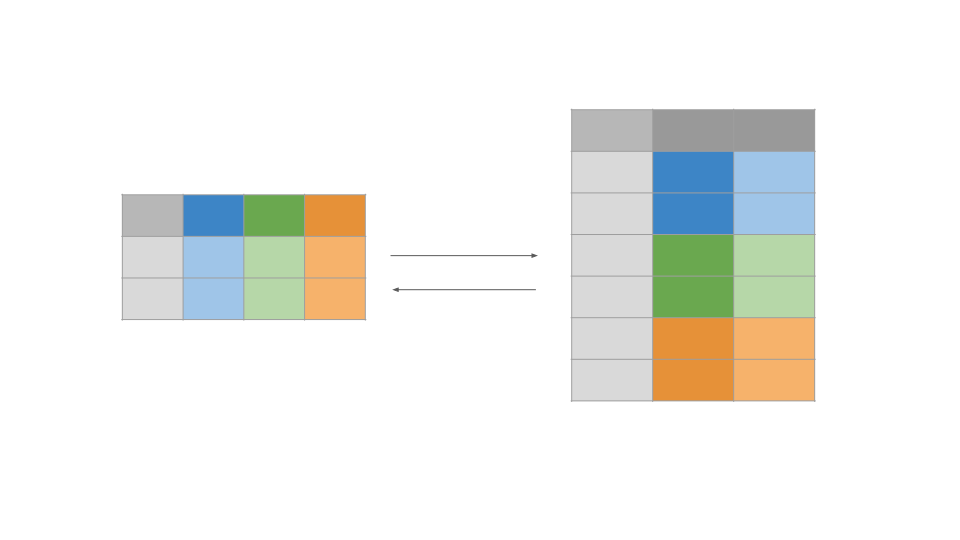

Code
# Install the package
install.packages("tidyverse")
# Load the library to make it accessible in you working environment
library(tidyverse)dplyr ?dplyr is a data manipulation framework that offers a consistent set of functions, or “verbs”, to tackle common data manipulation tasks. You’ll see how dplyr’s shortcuts can be used to perform traditional R data manipulation more efficiently. It also provides verbs that can help to simplify complex data operations.
This package is part of a larger package called tidyverse. So we need to install tidyverse and it will download automatically dplyr and other useful packages (see the link below).
As this package is not installed by default, it must be installed and activated.
# Install the package
install.packages("tidyverse")
# Load the library to make it accessible in you working environment
library(tidyverse)Link : Tidyverse
clinical_dataUsing the RStudio interface, load the file TCGA_LUAD_subset.tsv (See Manipulate the data)
For the following examples, we will take a dataset composed with some clinical variables (columns) and patients (rows).The dataset is named clinical_data. Display the 6 first rows.
head(clinical_data) sampleID known.oncogenes Purity pathologic_stage gender
1 TCGA.05.4249.01 KRAS 0.49 Stage IB MALE
2 TCGA.05.4250.01 KRAS 0.50 Stage IIIA FEMALE
3 TCGA.05.4384.01 RIT1 0.49 Stage IIIA MALE
4 TCGA.05.4389.01 BRAF_act 0.48 Stage IA MALE
5 TCGA.05.4390.01 KRAS 0.57 Stage IB FEMALE
6 TCGA.05.4395.01 KRAS 0.61 Stage IIIB MALE
tobacco_smoking_history signature_MAPK
1 Current reformed smoker for > 15 years 0.9298746
2 Current reformed smoker for < or = 15 years 0.4811406
3 Current reformed smoker for > 15 years 0.5672071
4 Current reformed smoker for > 15 years 0.3474326
5 Current reformed smoker for < or = 15 years 0.8763612
6 Current reformed smoker for > 15 years 0.5578706Check the dimensions of the data.frame. How many patients are described ? How many clinical features are available ?
dim(clinical_data)[1] 246 7The table contains 246 patients and 7 features.
Unlike our first example, you can see in the Environment panel that this dataset contains a large number of rows. This doesn’t change the functions we will be using; on the contrary, you will see that you will be able to work on very large datasets more easily.
data.frame with dplyrIn this section, we introduce the pipe %>%, a syntax that allows you to read the data and pass it through a series of functions seamlessly. The first pipe takes the initial dataset, making it easy to apply successive transformations in a clear, step-by-step manner.
With dplyr, you have all the tools needed to efficiently manipulate your data. You can filter, select, reorder, and modify rows and columns with simple functions like filter(), slice(), arrange(), select(), and mutate(). Additionally, you can rename columns, change their order, and even summarize groups of rows by their average, maximum, standard deviation etc.
We can select specific portions of data, such as rows, columns, or both, from a larger data set based on certain conditions. Sub-setting allows to extract meaningful data for analysis without modifying the original data set.

select() functionUse the select() function to display the columns pathologic_stage and tobacco_smoking_history.
How to select columns dplyr R
Or use the help provided by the package dplyr.
# NOTE : Here, we specify the package name with a double colon (::) and then the function name,
# to avoid conflicts between functions that may have the same name.
?dplyr::select# We refer to the columns by their name, the name is here evaluated as a variable (no quote)
clinical_data %>%
select(pathologic_stage, tobacco_smoking_history)This function is particularly interesting because it can be combined with other functions to either be more precise, or to search for something more vague. Try to find the function that enable to select columns starting with, ending with or containing a particular character or string.
The functions will be used as follow: select(function("char")) or select(function(function))
select columns start with dplyr R
| Functions to combine with select | Description | Examples |
|---|---|---|
| starts_with() | Starts with a specific character/string | clinical_data %>% select(starts_with("P")) |
| ends_with() | Ends with a specific character/string | clinical_data %>% select(ends_with("y")) |
| contains() | Contains a specific character/string | clinical_data %>% select(contains("onco")) |
| where() | Contains a specific type of variable | clinical_data %>% select(where(is.numeric)) |
These are just a few examples - there are many others, but these are the most important and widely used. It’s up to you to use them, test them and change them to understand how they work !
Note: We have seen that we can change the type of a variable by using functions as.* such as as.numeric() to transform a variable in numeric. In the same way you can test the type of a variable using is.* functions such as is.numeric() to test if a variable contains numeric value(s).
Looking at the above example, which columns will be returned ?
clinical_data %\>% select(starts_with("P")) returns Purity
clinical_data %\>% select(ends_with("y")) returns Purity, tobacco_smoking_history
clinical_data %\>% select(contains("onco")) returns known.oncogenes
clinical_data %\>% select(where(is.numeric)) returns Purity, signature_MAPK
filter() functionTo be able to filter based on values contained in columns, we need to know how to compare the content of the column with any value. In data manipulation, comparisons help you filter and select specific data based on conditions. Some common comparison operators include: == (equal to), != (not equal to), > (greater than), < (less than), >= (greater than or equal to), and <= (less than or equal to). Additionally, %in% is useful for checking if a value belongs to a set of values. These comparisons allow you to create logical statements that filter() can use to select the rows that meet your criteria.
Here is a table summarizing the most common operators:
| Operator | Description | Example |
|---|---|---|
== |
Equal to | x == "yes" , x == 6 |
!= |
Not equal to | x != "no" , x != 5 |
> , < |
Greater than, Less than | x > 5 , x < 5 |
>= , <= |
Greater/Less than or equal to | x >= 5 , x <= 5 |
%in% |
Checks if value is in a set | x %in% c("gender", "Purity") |
& |
logical AND | x < 6 & x > 3 |
| |
logical OR | x > 6 | x < 3 |
! |
logical NO | !x %in% c("gender", "Purity") |
What does these codes do ?
clinical_data %>% filter(gender == "FEMALE" | Purity >= 0.8)Using this command line, you are reading the object clinical_data with the first %>% and apply the filter() function with the second %>%.
The expression (the code within the brackets) contains two comparisons.
The first one compares all the elements in the column gender to the string “FEMALE”, this comparison returns TRUE when the column gender contains “FEMALE”.
The second one compares all the elements in the column Purity to the numeric value 0.8, this comparison returns TRUE when the column Purity contains values greater or equal to 0.8.
The two comparisons are separated by the logical OR | , this means that either the first comparison or the second is TRUE . The samples come from women or contain at least 80% of tumor cell.
clinical_data %>% filter(gender == "FEMALE") %>% filter(Purity >= 0.8)As above, the object clinical_data is first read then two passes of filtering are applied. The %>% enable to chain multiple treatments, each operation being applied to the result of the previews one.
While the comparisons are identical to the first command line, the effect is different. Indeed, the first occurrence of the function filter() will directly filter for women and the result of this filtering is given to the second occurrence of filter() where samples containing at least 80% of tumor cell will be kept.
In other words the two comparisons must be TRUE and the selected samples come from women AND contain at least 80% of tumor cell.
Bonus: Could you write the former line in an other way ? (There is a tip in the answer above)
You can combine the comparisons in one expression wanting that both of them are TRUE, this is possible using the logical AND &.
clinical_data %>% filter(gender == "FEMALE" & Purity >= 0.8)
clinical_data %>% filter(gender == "FEMALE") %>% filter(Purity >= 0.8) %>% select(sampleID:gender)From the clinical_data object, you fist filter for women, then for tumor cell content of at least 80% and then extract all the columns from sampleID to gender.
The : operator creates vector from a value (left element, sampleID) to another (right element, gender).
I want display the sample ID of the samples carrying either KRAS or no mutation with tumor purity less than 0.8.
clinical_data %>% filter(known.oncogenes %in% c("KRAS","None")) %>% select(sampleID) %>% filter(Purity < 0.8)
This bring an Error :
i Error in filter():
In argument: Purity >= 0.8.
! object ‘Purity’ not found
Run rlang::last_trace() to see where the error occurred.
From the clinical_data object, you fist filter for women, then you select for the column sampleID and finally you filter for tumor cell content of at least 80%.
By applying the selection of the column sampleID only, the column Purity do not exists anymore which explain the ! object 'Purity' not found error.
The order of the
slice() function and derivativesThe slice() function in dplyr is used to select rows from a dataset based on their position. Unlike filter(), which selects rows based on conditions, slice() lets you specify the exact row numbers to extract. It is particularly useful for tasks like getting the first few rows, excluding specific rows, or extracting rows at regular intervals. Variants like slice_head(), slice_tail(), slice_min() and slice_max() provide more flexibility, allowing you to select rows based on different criteria like smallest values, random sampling, or a fixed number of rows.
We have seen the basic R functions that allow us to display the beginning and end of a data frame. dplyr offers equivalent functions which can be seamlessly integrated into your data processing sequence.
i) Display the 10 first rows and the columns Purity, gender and pathologic_stage of clinical_data after having selected KRAS oncogene containing samples.
Purity gender pathologic_stage
1 0.49 MALE Stage IB
2 0.50 FEMALE Stage IIIA
3 0.57 FEMALE Stage IB
4 0.61 MALE Stage IIIB
5 0.46 MALE Stage IB
6 0.67 MALE Stage IIIB
7 0.55 MALE Stage IIIA
8 0.47 FEMALE Stage IIB
9 0.62 MALE Stage IB
10 0.69 MALE Stage IBWhich slice function would you use ? Which parameters (do not forget the help page or the web) ? You need to combine functions that we have seen in the previous section.
clinical_data %>% filter(known.oncogenes == "KRAS") %>%
select(Purity, gender, pathologic_stage) %>%
slice_head(n=10)ii) Display the bottom 5% rows of the data frame and the column from gender to signature_MAPK
gender tobacco_smoking_history signature_MAPK
1 MALE Current reformed smoker for > 15 years 0.88659402
2 FEMALE Current reformed smoker for < or = 15 years 0.01321854
3 MALE Current reformed smoker for > 15 years 0.20482966
4 MALE Current smoker 0.40294158
5 MALE Current reformed smoker for > 15 years 0.65727066
6 FEMALE Current reformed smoker for > 15 years 0.61056467
7 MALE Current reformed smoker for > 15 years 0.29172344
8 MALE Current reformed smoker for > 15 years 0.35302189
9 FEMALE Current reformed smoker for > 15 years 0.24914212
10 FEMALE Current reformed smoker for > 15 years 0.29499310
11 FEMALE Current reformed smoker for > 15 years 0.76281993
12 MALE Current reformed smoker for > 15 years 0.75537350Which slice function would you use ? Which parameters do not forget the help page or the web) ? You need to combine functions that we have seen in the previous section.
clinical_data %>%
select(gender:signature_MAPK) %>%
slice_tail(prop=0.05)slice_max() and slice_min() enables to select a defined number or proportion of rows depending on the values contained in a given column.
i) Select the 5 sampleID corresponding to the tumors with the highest tumor cell content (Purity).
sampleID Purity
1 TCGA.86.A4P7.01 1.00
2 TCGA.49.AARR.01 0.97
3 TCGA.99.AA5R.01 0.96
4 TCGA.50.5930.01 0.95
5 TCGA.50.6591.01 0.90Note: You need to handle ties, these are identical values that can not be ordered between them. Either you keep them all (default) or you keep the first(s) element(s) encountered in the column among those having the same value. In this example, we chose the former solution.
clinical_data %>%
slice_max(order_by = Purity, n = 5, with_ties = F) %>%
select(sampleID, Purity)ii) Which driver oncogenes are mainly harbored by the tumors with the 20% lowest MAPK activity (signature_MAPK).
known.oncogenes
BRAF.non ERBB2 KRAS NF1 None RIT1
3 2 5 6 31 2 Step-by-step
First, select the 20% lowest MAPK activity rows and the column known.oncogenes and save it it a variable named lowest_onco using slice_min().
lowest_onco <- clinical_data %>%
slice_min(order_by = signature_MAPK, prop = 0.2) %>%
select(known.oncogenes)Then, use the basic function table() which is an easy and very useful function to display all categories with the number of elements per category. This function takes as an argument a vector of categorical values, for instance the values of the column known.oncogenes.
table(lowest_onco)We can use the function select() to extract columns using their names as variable.
We can use the function filter() to select rows depending on values contained in the columns that we call by their names as variable.
We can select elements in a column by using comparison operators (eg. ==, >, !=) between a column called by its name as variable and a value (or a vector of values - c(element1, element2,etc.))
We can use slice_*() functions to select rows depending on their positions after ordering the table or not.
We can combine a series of operations using %>%, where each operation take as input the result of the preceding operation. The order of the operations is thus very important.
If it is not working and returning an error, do not freak out and read carefully the error. If it is still unclear, copy paste the Error in a web browser.
We can add columns filled with new data or with transformed values from an existing column. The new columns can be located at specific places in the data frame.

mutate()Create a column named none.onco containing a TRUE if the column known.oncogenes contains None and FALSE otherwise and display the 10 rows containing the lowest MAPK signature values and the columns sampleID, known.oncogenes , signature_MAPK and the new column none.onco.
sampleID known.oncogenes signature_MAPK none.onco
1 TCGA.38.4630.01 ERBB2 0.000000000 FALSE
2 TCGA.55.7995.01 NF1 0.000000000 FALSE
3 TCGA.62.A46O.01 None 0.000000000 TRUE
4 TCGA.73.A9RS.01 None 0.000000000 TRUE
5 TCGA.78.7155.01 None 0.000000000 TRUE
6 TCGA.86.7955.01 None 0.000000000 TRUE
7 TCGA.86.8358.01 None 0.000000000 TRUE
8 TCGA.91.6840.01 None 0.000000000 TRUE
9 TCGA.95.7043.01 NF1 0.000000000 FALSE
10 TCGA.95.7948.01 None 0.002232702 TRUEStep-by-step
i) Define how to obtain a Boolean vector (TRUE/FALSE) depending on the known.oncogenes column.
You need to use the comparison operator == between the name of the column (known.oncogenes) and the value None. In dplyr functions, the names of the column are called as variable (no quote), the string value "None" however needs to be surrounded by quotes.
known.oncogenes == "None"
ii) Write the mutate() function to add the none.onco column.
mutate(none.onco = known.oncogenes == "None")iii) Write the full stream of function from reading the data.frame to selection of the selection of the columns
clinical_data %>%
mutate(none.onco = known.oncogenes == "None") %>%
slice_min(order_by = signature_MAPK, n=10) %>%
select(sampleID,known.oncogenes,signature_MAPK,none.onco)The Purity column contains the proportion (between 0 and 1) of tumor cells in the sample, you want to transform the values as percentage (between 0 and 100). To perform this task, you need to multiply the values of this column by 100. Display the 5 firsts rows and the 3 firsts columns.
sampleID known.oncogenes Purity
1 TCGA.05.4249.01 KRAS 49
2 TCGA.05.4250.01 KRAS 50
3 TCGA.05.4384.01 RIT1 49
4 TCGA.05.4389.01 BRAF_act 48
5 TCGA.05.4390.01 KRAS 57You need to combine the mutate() function with functions enabling the select rows and columns.
We can change the layout of a dataset. It means, for example, transform columns into rows or the invert. This is a common task in data analysis, particularly when you need to organize data in a structure that is best suited for your analysis. In R, this often involves transforming data between long (tidy) and wide formats (messy). In a wide format, each row represent a single observation, and columns represent variables (like in our df_1 or df_2 examples).In a long format, each row is a single measurement, with a separate column for the variable and the value. This structure will be useful later for certain graphical representations.
